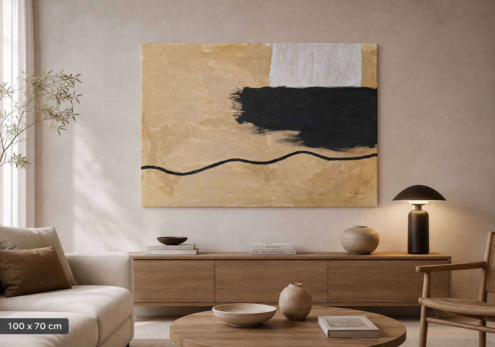
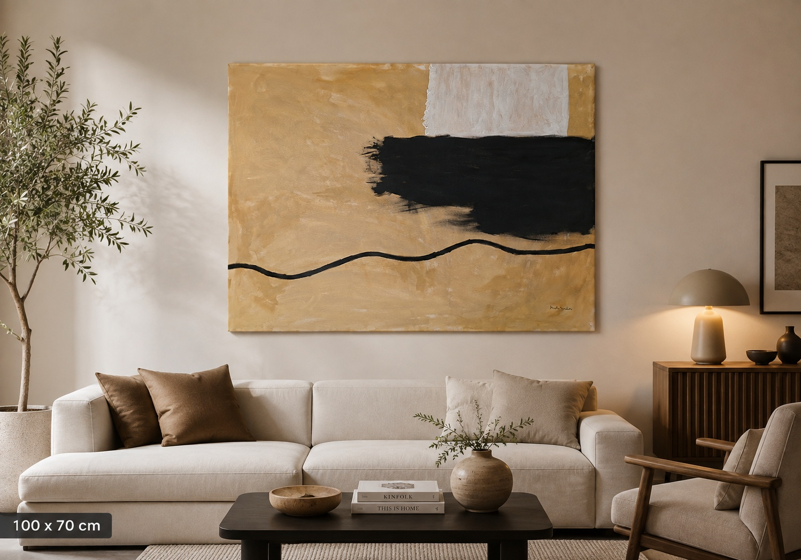

Abstracta Arredi · Collezione

Oltre il Confine
“Oltre il Confine” nasce dall’idea di rappresentare il punto d’incontro tra due dimensioni opposte: la luce e l’ombra, la calma e la forza, ciò che conosciamo e ciò che ancora dobbiamo attraversare.
Il grande campo scuro interrompe l’armonia dei toni caldi, mentre la linea nera che attraversa la tela simboleggia il nostro cammino personale, fatto di cambiamenti, deviazioni e nuove direzioni.
L’opera invita chi la osserva a trovare il proprio significato, lasciando spazio all’interpretazione e alle emozioni personali.
Dettagli dell’opera
Dettagli e fotografie ravvicinate della tela.


L’opera nello spazio
Il quadro ambientato in un interno.

